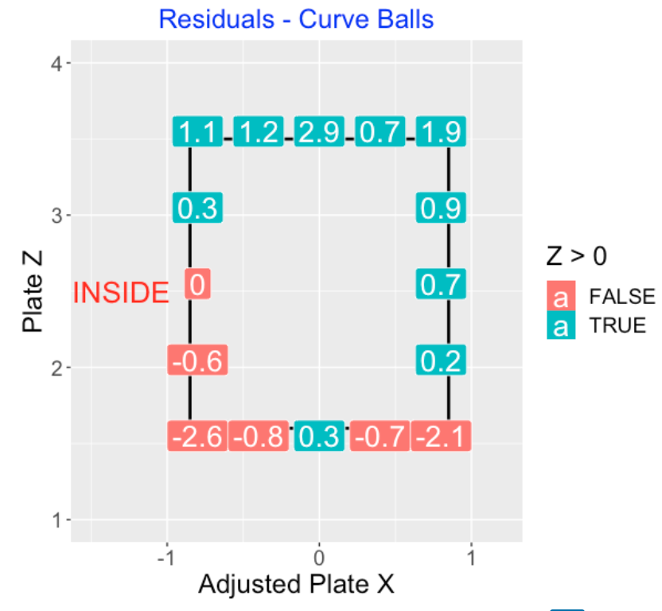

Called Strikes
1 Introduction
The pitcher throws a pitch to the batter who doesn’t swing – the umpire calls “strike” if the location of the pitch is within the strike zone and “ball” if the location is elsewhere. Although the process of calling balls and strikes is pretty simple, there are many variables that can influence the umpire’s called strike decision. This article consists of a number of blog posts on called strikes.
Sections 2 and 3 describe a model-based approach in exploring biases in calling balls and strikes. Given a pitch’s location, one can estimate the probability of a strike. We divide all of the called strikes into subgroups – in each subgroup, we compare the observed count of strikes with the expected count from the model. This method is used to show the bias of called strikes with respect to the count, inning, pitcher, and pitch type.
Section 4 illustrates the use of a Shiny app to explore the home/away bias in calling strikes. One selects a region about the zone and the app calculates the home advantage – visiting hitters are more likely to get strikes called than home hitters, especially on pitches near the boundary of the zone. Section 5 describes the use of another Shiny app to explore called strike biases across counts, inning and pitch type.
Catchers are currently able to steal strikes by catching balls in such a way to fool the umpire to call strike when really the pitch is outside of the zone. Section 6 introduces how we measure catcher framing. We review the use of runs expectancy to measure the value of specific pitches and use a model to estimate the impact of catching on called strikes given the presence of confounding variables.
2 Errors in Calling Balls and Strikes - Part I
2.1 Introduction
I’m currently watching the Western and Southern Open which is one of the major tennis tournaments preceding the U.S. Open. What is interesting about this tournament this year is that there are no line umpires. All of the lines are called using the Hawkeye Line Calling System. Actually, my first impression of the use of this tennis electronic system is favorable. Players can’t challenge the “in” and “out” calls and a match seems to proceed more smoothly. A minor criticism is that I get tired to hearing the artificial “out” sound when a shot is outside of the lines.
Baseball is similar to tennis in that the Hawkeye tracking system is currently being used in all MLB ballparks. In particular, we have an accurate measurement of the pitch location over the zone and one can see if a called pitch is a ball or a strike. But actually this doesn’t matter since the umpire visually makes the strike/ball decision on a called pitch and teams can’t challenge that decision. This leads to conflict. We (that is, the players and fans) see obvious umpire mistakes on our devices and players and managers are thrown out of the game for arguing “bad” ball and strike calls.
Recently there was an interesting Washington Post article talking about the errors umpires make in calling balls in strikes. This motivated this post where I look at the umpire errors and find some interesting biases or pattern in these errors.
Here are some questions that I’ll address in this post.
Is this really a big deal? How many strikes are gained or lost in a typical game due to the umpire errors in calling strikes?
How does the count affect the number of called strike errors?
Do the called strike errors vary by inning or by the top or bottom of the inning? (Here we are looking for a home field bias.)
Do the umpire errors in calling strikes vary by pitcher? In particular, are there pitchers that seem to benefit from umpire called strike errors?
2.2 Methods
The Statcast data includes the \((x, y)\) coordinates of the pitch over the plate and the umpire call (either ball or strike) for all of the called pitches. We want to estimate the probability of a called strike for any pitch. To do this, we fit the generalized additive model
\[logit(p) = s(x, y)\]
where \(p\) is the strike probability and \(s(x, y)\) is a smooth function of the location.
By the way, here is a picture of the fit using 2021 season data. The rectangle represents the “official” strike zone, and the blue curve (the actual strike zone) is the contour line where the predicted probability of a strike is 0.5.
Using different groupings, we will divide all of the called pitches into categories. For each category, we compute
\(S\) = number of called strikes
\(E\) = the expected number of called strikes (found by adding up all of fitted probabilities over the pitches in the category)
\(S - E\) = the increase in actual called strikes over what is predicted based on the pitch location
\(Z = (S - E) / \sqrt{E}\), the standardized score (this helps us to interpret the size of the increase)
2.3 Errors in a Game
For the 2021 season, I computed \(S - E\) for each game – a histogram of these differences is displayed below. Generally, the umpire errors (number of additional strikes over expected) range between -10 and 10, although it is a bit unusual to be larger than 5 or smaller than -5.
2.4 Errors as a Function of Count
The calling strike errors are strongly affected by the count. We graph the standardized scores for all counts below. In hitters counts (1-0, 2-0, 3-0), the umpire tends to call more strikes than predicted, and in pitchers counts (0-1, 0-2, 1-2), the umpires tend to call more balls than predicted. Interesting, the standardized scores are closest to 0 for the 2-1 and 3-1 counts, and the standardized scores are closer to zero deeper in the count.
2.5 Errors by Half Inning
I wouldn’t think that umpire calling strike errors depend on the particular inning, but I anticipate some home team bias. Below, I display the z-scores for all half innings (2021 season data). Looking at several of these graphs for different Statcast seasons, I don’t see any general pattern across innings. But there is a sizable effect due to the half of the inning. The z-score for the top of the inning (home team pitching) tends to be larger than the z-score for the bottom of the inning for each inning. This is one reason why pitchers like pitching in their home ballpark, they will get more favorable strike calls from the umpire.
2.6 Pitcher Effects
Do umpires make more called strike errors for specific pitchers? First (again using 2021 Statcast data), I plot the standardized score for all pitchers who have had at least 100 called pitches. I don’t see any general pattern here, but I do notice a few unusually high Z-scores, so maybe a few pitchers influence these umpire errors.
Next, I did this work for all Statcast seasons from 2015 through 2021. That is, for each season, I fit the GAM model and compute the standardized scores for all pitchers.
I created a top 10 list – these are the pitchers who had the most additional called strikes (S - E) over the seven-season period. This is interesting – we see some star pitchers in this list such as Dallas Keuchel and Zach Greinke.
## Name Additional_Strikes
## 1 Dallas Keuchel 289.
## 2 Zach Davies 251.
## 3 Zack Greinke 237.
## 4 Jon Lester 221.
## 5 Wade Miley 175.
## 6 Julio Teheran 170.
## 7 Kenta Maeda 164.
## 8 Gio Gonzalez 152.
## 9 Masahiro Tanaka 150.
## 10 Jesse Chavez 142.Let’s look at Keuchel and Greinke on a season to season basis. For each pitcher/season, I display the number of called pitches (N), the number of called strikes (S), the expected number of strikes (E), and the corresponding z-score. Note that both Greinke and Keuchel consistently get more called strikes than expected – all of the z-scores for both pitchers for all seasons exceed one.
## Season Name N S E Z
## 1 2015 Zack Greinke 1251 401 371. 1.58
## 2 2016 Zack Greinke 1184 401 381. 1.02
## 3 2017 Zack Greinke 1581 577 528. 2.12
## 4 2018 Zack Greinke 1462 559 506. 2.33
## 5 2019 Zack Greinke 1573 577 541. 1.55
## 6 2020 Zack Greinke 597 227 210. 1.19
## 7 2021 Zack Greinke 1088 382 350. 1.74## Season Name N S E Z
## 1 2015 Dallas Keuchel 1301 456 378. 4.01
## 2 2016 Dallas Keuchel 1285 455 414. 2.04
## 3 2017 Dallas Keuchel 1127 361 298. 3.62
## 4 2018 Dallas Keuchel 1491 501 469. 1.49
## 5 2019 Dallas Keuchel 965 299 272. 1.62
## 6 2020 Dallas Keuchel 496 160 138. 1.87
## 7 2021 Dallas Keuchel 1047 354 328. 1.422.7 Some Takeaways
Explanatory variables. There are many variables that influence the outcomes of the called pitches. It has been well documented that there is substantial variation between umpires. Also catchers “steal” strikes by their framing techniques. I’ve illustrated other sources of variation of umpire errors here such as the count, and the home/away effect.
Does it matter? Since the number of called strikes can be 10 larger or smaller than the expected count, these umpire errors can play big roles in games.
One blown call that mattered. In the top of the 8th inning of the Reds/Phillies game of August 15, the Reds scored three runs against the Phillies after this pitch on a 1-2 count (see below) with two outs was incorrectly called a ball. A correct strike call would have ended the half-inning – the Phillies ended up losing the game 7-4.
Pitcher effects? I haven’t done a complete study here, but I find it interesting that particular pitchers like Greinke and Keuchel do consistently get more called strikes than expected. It would be worthwhile to explore this further. Do these additional strikes for these pitchers occur for particular pitch types or locations?
Bring on the robots. Given all of the known biases in calling balls and strikes, I think it is only a matter of time before MLB moves to a system where pitches are called automatically. It actually might help to speed up the game since there will be fewer arguments and conflict about called balls and strikes.
3 Errors in Calling Strikes - Part 2
3.1 What We Learned from Part I
In last week’s post, I started to explore errors that umpires make in calling balls and strikes. I used a generalized additive model to estimate a true strike zone, and then explored deviations from this true zone due to several variables. In particular, we saw that an umpire is more likely to call a strike in a hitter’s count (like 2-0) and the umpire is more likely to call a ball in a pitcher’s count (like 0-2). We looked at patterns of calling strikes across innings – the most obvious thing is a home pitcher is more likely to get a called strike than a visiting pitcher.
Maybe the most interesting thing I explored were pitcher effects in ball and strike calls. We found that particular pitchers like Zach Greinke and Dallas Keuchel consistently get more strikes called than one would predict based on pitch location. Other pitchers appear to get more balls than predicted based on location. These patterns are consistent from season to season.
Thinking about these pitcher effects, I posed the the following question:
- Do the umpire errors in calling pitches depend on the pitch type?
I’ll address this question in this post by exploring patterns of umpire errors for popular pitch types using 2019 season data.
3.2 Adjusting True Zone by Batting Side
Last week I showed contours of a true strike zone where the boundaries of the zone corresponded to the region where the predicted probability of a strike is equal to 0.5. But this figure ignores the batting side of the hitter. To correct this, I define an adjusted plate_x variable equal to minus plate_x for a left-handed hitter and plate_x for a right-handed hitter. (With this adjustment, a negative plate_x value always corresponds to an inside pitch.) I fit a new GAM model where the input is a smooth function of adjusted plate_x and plate_z. Then I obtain a new graph shown below which indicates that the true strike boundaries are not symmetric about plate_x = 0. On the inside, the true zone boundary does line up with the official zone boundary, but on the outside, the true zone boundary goes a few inches outside of the limits of the official zone.
For all of the calculations below, I will base my called strike predictions from the GAM model that adjusts for batting side.
3.3 Anticipated Biases
Before we look at these residual graphs, it would be helpful to think about the patterns that we anticipate to see. A four-seamer is a fast ball that has relatively little movement. So I would think it would be a relatively easy for an umpire to make the correct call on a ball or strike for a four-seamer pitch. In contrast, off-speed pitches such as curveballs or sliders have substantial movement and these pitches enters the zone at an angle. It would seem harder to call these off-speed pitches accurately, but I am unsure what type of errors we would observe. So these graphs might potentially be helpful in understanding the locations and directions of inaccurate calls.
3.4 Overall Residuals
To get a general sense of pitch type effects, here is a table of outcomes of “borderline” called pitches for the 2019 season broken down by the seven most popular pitch types. I am defining borderline to be outside of the center region of the zone where plate_x is between -0.6 and 0.6 and plate_z is between 1.8 and 3.3. This table gives the number of called pitches N, the number of called strikes S, the expected number of strikes E and the standardized residual Z. The most interesting takeaway is that we see large positive effects for 2-Seam Fastballs and Cutters – for both pitch types, we are seeing about 150-200 more strikes than expected. We see smaller negative and positive effects for the other five pitch types.
pitch_name N S E Z
<chr> <int> <dbl> <dbl> <dbl>
1 2-Seam Fastball 26785 6167 5955. 2.75
2 4-Seam Fastball 113887 24652 24799. -0.932
3 Changeup 31807 4395 4481. -1.29
4 Curveball 27917 5621 5594. 0.367
5 Cutter 19073 3737 3586. 2.52
6 Sinker 24267 5530 5569. -0.526
7 Slider 50127 9006 9182. -1.843.5 Residuals Across the Zone
Using the 2019 season data, we divided the zone into 25 regions. For a particular pitch type, for each region, we compute the number of called strikes \(S\), the expected number of strikes \(E\) using the GAM model, and the standardized residual \(Z = (S - E) / \sqrt{E}\). I display the values of the residuals graphically across the borderline regions of the zone. If the residual \(Z\) is positive, this means that the umpires are calling more strikes than predicted based on the location. If \(Z\) is negative, the umpires are calling fewer strikes than predicted based on location. We are looking for patterns in the \(Z\) residuals, focusing on the boundaries of the zone where it is more difficult to call a ball or strike.
3.6 Called Two-Seamers
Here is a graph of the \(Z\) residuals for the called pitches of the two-seam fastballs where the black rectangle shows the location of the average zone. (This is average since the zone varies by the height of the batter.) Focusing on the “large” residuals (say, over 1.5 in absolute value), I see a tendency for more called strikes on the inside boundary, especially in the low-inside corner of the zone.
3.7 Called Four-Seamers
Here is a residual graph for the called pitches of the four-seam fastballs. I see a tendency for fewer than predicted strikes on the top edge of the zone and a larger than predicted strikes on the bottom of the zone.

3.8 Called Cutters
For cutters, there appears to be a tendency to call extra strikes in the upper inside boundary of the zone.
3.9 Called Sliders
Here is a residual graph for sliders for called pitches. It is more difficult to interpret the pattern here since many of the \(Z\)-scores are less than 1 in absolute value. But I notice a tendency to call fewer than predicted strikes on the inside edge of the zone.
3.10 Called Sinkers
For this residual graph for the called pitches for sinkers, it is more difficult to detect a general pattern. Note the large \(Z\) residual of 1.7 for low inside called sinkers.
3.11 Called Changeups
Looking at the residual graph for change-ups, note the positive bias for pitches at the upper edge of the zone, and negative bias for pitches at the lower edge of the zone.
3.12 Called Curveballs
The residual graph for curveballs shows a positive (more strikes) bias both at the top edge of the zone. There is a reluctance to call a strike on the lower corners of the zone.

3.13 Takeaways
Here are some interesting takeaways from this study.
There are clearly some significant pitch type effects in called balls and strikes. Umpires tend to call more strikes for two-seam fastballs and cutters. Both pitch types are fastballs with some movement. In contrast, umpires call fewer strikes than average on sliders and changeups.
The residual graphs are helpful in seeing the regions where umpires are likely to call more or fewer strikes. For example, for four-seamers we see fewer strikes called on the upper edge of the zone and more strikes called on the lower edge of the zone.
One has be careful in interpreting the \(Z\)-scores since small positive and small negative values are spurious. These small \(Z\)-scores can change across seasons. But there are clear patterns in these residuals that appear to be consistent across seasons.
These umpire biases on pitch types should be of interest to pitchers who want to get called strikes on borderline pitchers.
4 Exploring the Home/Away Bias for Called Strikes
4.1 Introduction
We are all familiar with the home field advantage in baseball. Teams tend to play batter at home, players tend to hit better in their home ballpark, and so on. But the rationale behind the home field advantage is less clear. Here’s an interesting article that presents the “facts and the fiction” about home field advantage. This author claims, following research from the Scorecasting book by Moskowitz and Wertheim, that the major reason for home team advantage is the umpires officiating that gives an advantage to the home team. I generally agree with Moskowitz and Wertheim. In baseball, one of the major ways for umpires to show favoritism is in their calling of balls and strikes.
Retrosheet recently released their play-by-play data for the recent 2022 baseball season. Given this new data, I thought it would be a good exercise to write a Shiny app that would allow the user to explore the home-team bias in calling balls and strikes. One chooses a rectangle about the zone the the app will give the proportion of called strikes for the home team, for the away team and compute what I call the home bias. This app is easy to create and might be a good way for the interested reader to learn the interface for building Shiny apps.
4.2 Downloading the Retrosheet Files
For those new readers, I should briefly review the process of downloading the play-by-play files from the Retrosheet site. On this page, I describe the process of downloading the individual files for a particular season and extracting all of the variables using the Chadwick software. We’ve written a special R function for computing the runs values for all plays. These can be used for computing the runs expectancy matrix for the 2022 season.
4.3 The Shiny App
When you launch this app, you see a scatterplot of the locations of 5,000 called pitches where a called strike is colored red and a called ball is colored tan. Since the location of called strikes may vary by the pitching arm and the batter side, you can select the side of the pitching arm and the batter side on the left. In this example we are considering all called strikes thrown by a right-arm pitcher against a right-handed batter.
You select a region about the zone by brushing over the graph. Here I am selecting a region at the bottom of the zone – since it straddles the bottom of the zone, I would guess the percentage of called strikes to be about 50%. The bottom table gives the number of called balls and called strikes for the home team (bottom of the inning) and the visiting team (top of the inning). Here we see that the called strike rate is 61.179 for the home team and 62.000 for the visiting team. Since the called strike rate is lower for the home team, that gives them an advantage. We measure this bias by computing
Called Strike Rate (Visiting Team) MINUS Called Strike Rate (Home Team)
We call this the Home Bias – looking at the bottom left of the app, we see the bias is 0.821 percentage points for this selected rectangle.
4.4 Using the App
Using this app, I explored the size of the Home Bias for regions about the zone. I decided on using regions with a width of 0.2 feet and selected regions centered about the four sides of the zone where one would expect the called strike rate to be about 50%. I considered the four matchups – R_R is a right-handed pitcher against a right-handed batter, R_L is a right-handed pitcher against a left-handed batter, L_R is a southpaw against a right-handed batter and L_L is a leftie against a leftie. For each case (selected rectangle and pitcher and batter sides), the app gave me the Home bias.
This table gives the results (each number reported is the Home bias reported as a percentage).
Location R_R R_L L_R L_L
1 Bottom 1.21 1.23 1.30 0.84
2 Top 0.47 0.52 0.73 0.72
3 Inside 0.31 1.29 0.55 1.33
4 Outside 1.53 0.36 1.33 0.404.5 Some takeaways:
For all cases, the home biases were positive, ranging between 0.40 and 1.53 percent.
The home biases at the bottom of the zone were larger than the biases at the top of the zone.
Interestly, the biases at the right of the zone (from the catcher’s viewpoint) were higher than the biases at the left of the zone. This would be outside pitches for right-handed batters and inside pitches for left-handed batters.
4.6 Some Comments
Umpires have a big influence on the outcomes of games by their calling of balls and strikes. This Shiny app documents the umpire bias in favoring the home team – the called strike percentage is always larger for visiting batters than for home batters.
The size of the bias depends on the location of the pitch. The bias exceeds one percent for pitches at the bottom and left sides of the zone.
My summaries of the bias were based on particular rectangles that I selected – the interested reader can choose other rectangles to learn more about the locations where the bias is large or small.
I have not explored all of the potential inputs that may affect the size of the home bias. The sides of the pitcher and batter seemed like obvious things to check. I would think that the count may also impact the called strike probability and the size of the bias.
Should MLB start using robots to call balls and strikes? We certainly have the technology, other sports like tennis use the technology to replace umpires, and I don’t think robots would have the home team biases that we see here.
4.7 R Notes
This Shiny app is the function BrushingCalledPitches() in my ShinyBaseball package. Currently the app is live – you can play with the app at the location
https://bayesball.shinyapps.io/BrushingCalledPitches/
Due to space limitations, I was only able to put about 50% of the 2022 called pitches (150,000 of them) on my Github site, so this on-line app doesn’t use all the data. But I think the pattern of home bias values should be consistent with the results presented here that use all the 2022 called pitches.
If you inspect the R code for my app here, you will see that the app isn’t that complicated. I have several functions construct_plot(), calculate_rate(), that do all of the work and the user interface part of the app is short.
5 A Shiny App to Explore Called Strike Biases
After I wrote a Shiny app to explore home/away biases in calling balls and strikes, I was motivated to write a new app that would explore other types of biases.
This is a snapshot of the CalledStrikeBias app in the ShinyBaseball package.
The only input is the width of the boundary region Epsilon. This defines the size of the region that hugs the edges of the zone. In this example, I select the width to be 0.2. The selected boundary region is colored blue in the display in the lower left area of the app.
The Count Effects tab displays a plot of the called strike proportion as a function of the number of pitches (balls plus strikes) where the labeling point is the count. We see …
the called strike probability, for fixed count of balls, is a decreasing function of the number of strikes
for fixed count of strikes, the called strike probability is an increasing function of the number of balls
there is a large range in these probabilities, from 0.35 to 0.65
By selecting the Pitch Type Effects tab, we see how the called strike probabilities vary by pitch type. We see …
- the called strike probability is lowest for four-seam fastballs (FF)
- the probability is largest for the off-speed pitches curve ball (CU), sinkers (SI) and sliders (SL)
- compared with the count effects, the range of the probabilities is relatively small
By selecting the Inning Effects tab, we see how the called strike probabilities vary by inning.
The main takeaway is the called strike tends to increase as the game progresses. The lowest value is during the 1st inning and the highest values are in the 8th and 9th innings.
Again these are relatively small effects compared to the count effects.
6 Catcher Framing
6.1 Introduction
The general problem of interest is measuring the performance of a baseball catcher. To address this, we need to understand the qualities of a “good” catcher. Next we need to address how one can measure different types of catcher. performance. All measurements are not useful. So we need to understand which catcher measurements are important in the sense that they are useful in predicting future performance.
Catcher framing refers to the ability of a catcher to catch a ball so it appears to be a strike. In this section we describe a way of measuring catcher framing, show how this measurement can be adjusted for other input variables, and argue that this is an important aspect of catcher performance.
Catcher framing has been described for many years. For example, here is a description of a good receiver from the 1954 Dodger Way to Play Baseball (from the book Power Ball: Anatomy of a Modern Baseball Game).
“The good receiver often makes many doubtful strikes pitches by catching the ball properly. This is not done by jerking or pulling the ball over the plate. Instead it is done by bringing all close pitches toward the belt buckle if they are just inside or outside of home plate. … The entire action must be smooth if the umpire is to be deceived.”
6.2 The Count
To begin our discussion of catcher framing, we need to talk first about the count.
A plate appearance start at a 0-0 count (0 balls and 0 strikes) and each pitch adds either a strike or a ball to the count. There are 12 possible counts in a plate appearance: 0-0, 1-0, 0-1, 2-0, 1-1, 0-2, 3-0, 2-1, 1-2, 3-1, 2-2, 3-2
These 12 possible counts can be divided into three groups:
- pitcher counts (like 1-2) favor the pitcher
- batter counts (like 3-1) favor the batter
- neutral counts (like 1-1) favor neither the pitcher or the batter
The outcome of every pitcher in a plate appearance gives an advantage to the pitcher or the batter. We measure this advantage by the idea of Runs Expectancy.
6.3 Runs Expectancy
6.3.1 Definition
To describe runs expectancy, we first define the state of an inning by the number of outs and runners on base. There are three possible number of outs (0, 1, 2) and eight possible configurations of runners on base, so there are \(3 \times 8 = 24\) possible inning states. For a state, we define “Runs Expectancy” as the expected number of runs scored in the remainder of the inning. We typically compute runs expectancy values using data for a particular season.
Here is the Run Expectancy Matrix (RE24) based on data from the 2015 season.
6.3.2 Value of a Play
Using the Runs Expectancy Matrix, we can define the value of any play, called the Runs Value, as the change in Runs Expectancy values plus the runs scored on the play.
\[ RE24_{after} - RE24_{before} + Runs \, Scored \]
For example, say we wish to compute the value of a home run with a runner on 1st and one out. We note that …
- From the RE24 matrix, the value of the starting state (runner on 1st and one out) is 0.50
- The value of the ending state (no runners on base with one out) is 0.25
- Two runs scored on the play.
So the value of this particular home run is
\[ 0.25 - 0.50 + 2 = 1.75 \, \, Runs \]
As a second example, say we wish to compute the value of a successful stolen base with a runner on 1st and one out. We see …
- The value of the starting state (runner on 1st and one out) is 0.50
- The value of the ending state (runner on 2nd with one out) is 0.66
- No runs scored on this play
The value of this successful stolen base is \[ 0.66 - 0.50 = 0.16 \, \, Runs \]
6.4 Run Values of Pitches
We can use runs expectancy to measure the value of a pitch. First we measure the runs value of a particular count by averaging the runs in the remainder of the inning for all the plate appearances that pass through that count.
For example, to measure the value of a 1-2 count, we …
- Look at all the plate appearances that go through a 1-2 count
- Average the runs in the remainder in the inning for all these plate appearances
This figure displays the runs values of all possible counts where the value is graphed against the pitch number. Positive runs values (such as 2-0 and 3-0) favor the batter and negative runs values such as (0-2 and 1-2) favor the pitcher.
The runs value of a particular pitch is the change in runs values between the current count (before the pitch is thrown) and the new count (after the pitch is thrown). These pitch values are illustrated by lines in the figure between “successive” counts. For example, suppose the current count is 1-1 and an errant pitch is thrown which is called “ball”, changing the count to 2-1. Note from the figure that the runs value has changed from a negative value (at 1-1) to a positive value (at 2-1). Here the runs value of the pitch is positive which is advantageous to the batter.
These run values have a direct relationship with team wins. Bill James (a famous sabermetrician) found a relationship between the team runs scored and allowed (R and RA) and the team wins and losses (W and L) called the Pythagorean formula:
\[ \frac{W}{L} = \left(\frac{R}{RA}\right)^k \]
Using this relationship, one can show that a contribution of 10 more runs is approximatley equivalent to contributing one win for the team.
Using the pitch values, we can measure the value of a called strike. Each additional strike contributes runs to the defensive team. Each individual pitch contribution is small, but the cumulative effect of many added strikes is large. One can convert the runs contributed by a catcher to wins.
6.5 Measuring the Actual Strike Zone
Pitches are thrown by the pitcher towards a “strike zone”. If the batter does not swing, pitches are called “strikes” or “balls” by the umpire. The strike zone is precisely defined and pitches landing inside zone should be called strikes.
Here is a graph of the official strike zone.
To see if this zone actually corresponds to the called balls and strikes, here are the results of 1000 called pitches.
Here is a graph of the locations of 500 calls where the umpire made an error.
What is interesting about called balls and strikes is that there are many potential factors that can influence this call. The umpire, the batter, the pitcher, the catcher and “other” factors can influence the call decision.
By use of data and modeling, one can learn about the actual strike zone used in Major League baseball. The data are the \((p_x, p_z)\) coordinate locations of all called pitches in the 2017 season. The observed response is \(y\) which is either 1 (called strike) or 0 (called ball). We let \(p\) denote the probability that a pitch is called strike (\(y = 1\)).
To learn about how the location impacts a called strike, we fit a the generalized additive model \[ \log\left( \frac{p}{1-p}\right) = s(p_x, p_z), \] where \(s(p_x, p_z)\) is a smooth function of the location
The edge of the actual strike zone is defined where the fitted probability \(p = P(Strike) = 0.5\).
The blue curve describes the edges of the “actual” strike zone using all data from the 2017 season. This varies from the official strike zone defined by Major League Baseball.
One important input into the location of the zone is the count. Generally, a pitcher-favored count will tend to shrink the zone, and a batter-favored count will tend to expand the zone.
For example, here is the actual strike zone on a 2-0 count. Note that this is larger than the overall average zone.
In contrast, here is the actual smaller strike zone for a pitcher-friendly 0-2 count.
6.6 Catcher Framing
One can measure catcher framing by the use of multilevel model that expands the method of finding the actual strike zone.
As before the outcome is the binary called pitch (strike or ball). For inputs, we consider ..
- the pitch location \((p_x, p_z)\)
- the pitcher effect
- the batter effect
- the umpire effect
- the catcher effect
By including many relevant input variables, we are measuring catcher framing adjusting for other variables.
We fit the generalized additive model: \[ \log\left( \frac{p}{1-p}\right) = s(p_x, p_z) + p_{j(i)}+ b_{k(i)} + u_{l(i)}+ ca_{m(i)} \]
As before \(s()\) is a smooth function of the location variables. There are four sets of random effects {\(p_{j(i)}\)}, {\(b_{k(i)}\)}, {\(u_{l(i)}\)}, {\(ca_{m(i)}\)}, corresponding to pitchers, batters, umpires and catchers. Each set of random effects is assigned a normal prior with an unknown standard deviation, so there are four unknown standard deviations to estimate.
To measure catcher framing, we estimate the {\(ca_j\)} random effects. These estimates can be converted to strikes and runs saved.
Details and implementation of this fitting procedure are described in the Catcher Framing chapter (Chapter 7) of Analyzing Baseball Data with R, 2nd Edition.
6.7 Wrap-Up
A good catcher framer gives the defensive team more called strikes (instead of balls). Each called strike saves about 0.03 runs per called strike. Best framers can save 10-20 runs scored for their teams.
Catcher framing is an illustration of the usefulness of pitch tracking data in the measurement of player performance. Managers always knew catcher framing existed, but they were unable to measure it. Currently framing is viewed to be an important skill of a catcher. But this skill among with the many biases in calling balls in strikes may disappear if MLB implements robot umpiring in future seasons.